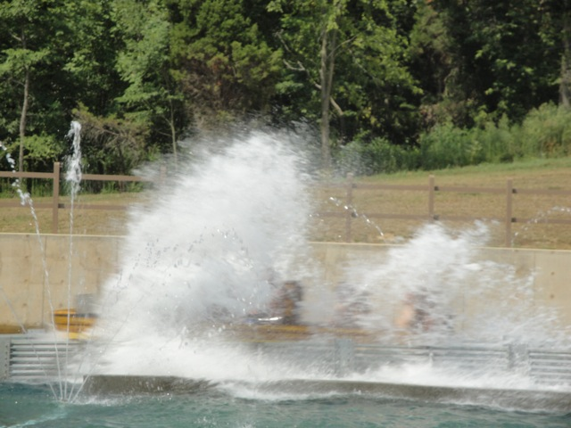
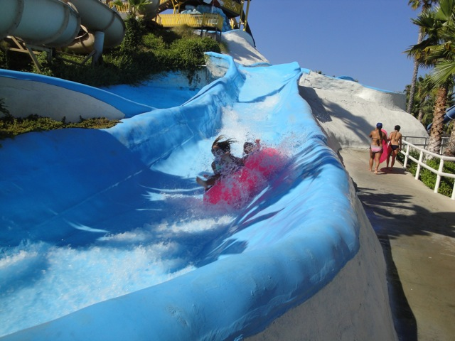
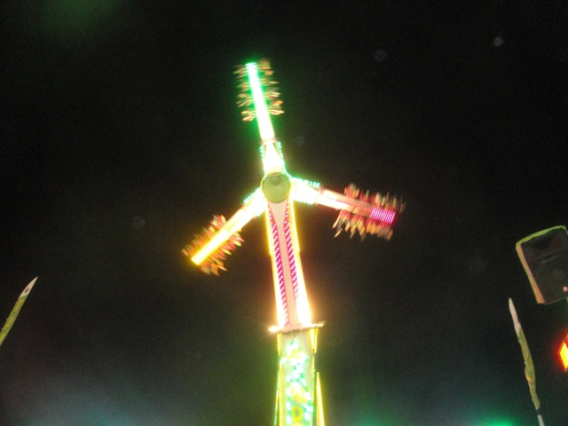
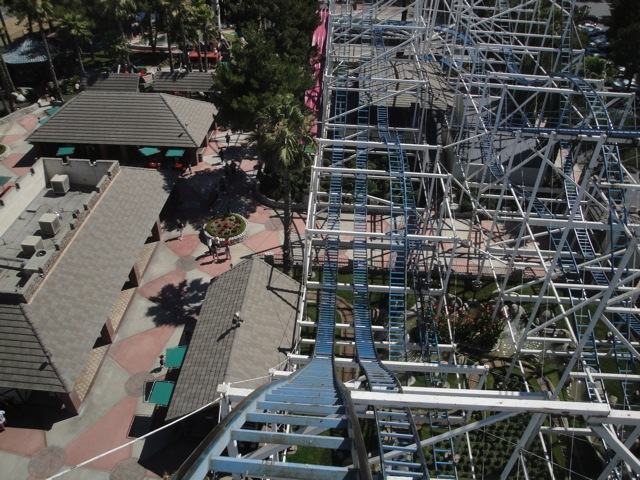
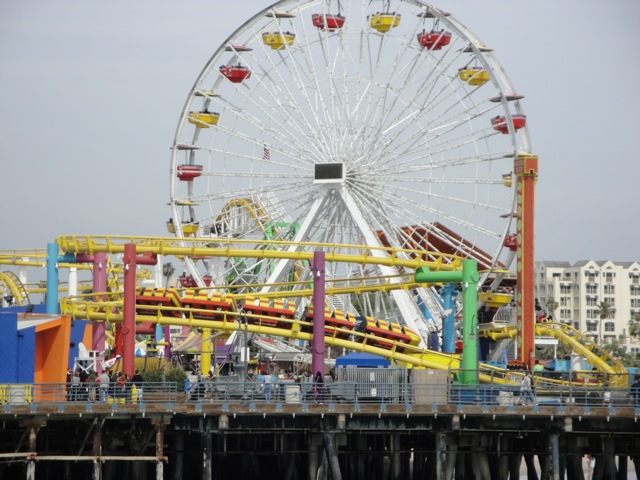
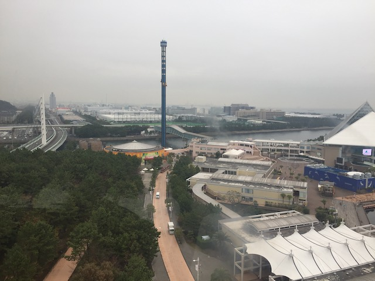

| |
Top 10 Lists
Home
Welcome to the Official Incrediblecoasters Top 10 Index. Here, we have links to all our Top 10 Lists. Now many of you may think, why have entire pages just devoted to a Top 10 List? Well, unlike most places, we at Incrediblecoasters actually take the time to actually explain why X ride got the #1 spot and why Y ride is only at the #7 spot. Most people don't do that. They just go. Here's my Top 10 List, and then list it without any explenation why each ride or park is where it is at. Now normally, this is fine since most people are just listing their Top 10 Lists in a Your Top 10 List Thread of a roller coaster forum. But then there are certain Top 10 Lists that I HATE and they drive me insane. Now you can have Dragon or Gouderix on your Top 10 List and I won't care. I might think you're crazy and/or a sadomasachist, but people are free to form their own opinions and I don't mind that. What annoys me is when people don't back up their opinions. Prove to me WHY you think that Gouderix is your favorite coaster!!!! Here you are, making this sh*tty Youtube Top 10 List and it doesn't even contain why the #1 spot is #1 etc. It makes you look lazy, and when your list is just repeating everyone elses, you look like a liar and a copycat who doesn't even know what they're talking about with these rides. Well, that's why I came up with the Incrediblecoasters Top 10 Lists. We not only actually explain our positions, but we do lists for as much as possible instead of just the usual Top 10 Roller Coasters and the Top 10 Theme Parks.
Oh, and if you have any ideas for a future Top 10 List, tell us on Facebook and we just might take your suggestion. We could always use more ideas for future Top 10 Lists.
Past Top 10 Lists
Our now outdated Top 10 Lists. Good if you want an idea of any #11 or #13 or any spots like that, or for those just curious.
Top 10 Wooden Coasters
 As the first roller coasters ever built, Wooden Roller Coasters have been around for quite some time. And while the General Public knows this, they see this as a sign of being old and boring, which on the contridary, Wooden Roller Coasters are wild, crazy, and insane. Check out which 10 are the wildest and craziest in our Top 10 Wooden Coasters List.
As the first roller coasters ever built, Wooden Roller Coasters have been around for quite some time. And while the General Public knows this, they see this as a sign of being old and boring, which on the contridary, Wooden Roller Coasters are wild, crazy, and insane. Check out which 10 are the wildest and craziest in our Top 10 Wooden Coasters List.
Top 10 Steel Coasters
 While Wooden Coasters may have the reputation of being old, rusty, and ancient, Steel Coasters have the reputation of being the new, hip, and modern bad boy on the block. And while not all of them are like that, not all of them need to be like that. Check out what Top 10 Steel Coasters have the ability to do and what makes these rides world class.
While Wooden Coasters may have the reputation of being old, rusty, and ancient, Steel Coasters have the reputation of being the new, hip, and modern bad boy on the block. And while not all of them are like that, not all of them need to be like that. Check out what Top 10 Steel Coasters have the ability to do and what makes these rides world class.
Top 10 Amusement Parks
 While some of the worlds greatest roller coasters are great and all, you have to give credit to the homes that these bad boys live in. Amusement Parks are home to many other insane fun things to do besides insane roller coasters and we have to honor them for that. Now it's difficult to compare different amusement parks because ranking them without any consideration is like comparing apples to oranges to papayas to carrots to bacon to jelly doughnuts. But we'll do it anyways. These are the Top 10 Amusement Parks to visit to.
While some of the worlds greatest roller coasters are great and all, you have to give credit to the homes that these bad boys live in. Amusement Parks are home to many other insane fun things to do besides insane roller coasters and we have to honor them for that. Now it's difficult to compare different amusement parks because ranking them without any consideration is like comparing apples to oranges to papayas to carrots to bacon to jelly doughnuts. But we'll do it anyways. These are the Top 10 Amusement Parks to visit to.
Top 10 Dark Rides
 Continuing on with our new section of Top 10 Lists, our newest Top 10 List introduces you to 10 of the best dark rides that can be found in the United States. These aren't your typical Fantasyland Dark Rides or even the lousy poorly built peice of sh*t Zombie style dark rides. These are truely the dark rides that you actually want to ride as much as most roller coasters. Check it out and see which dark rides made the cut.
Continuing on with our new section of Top 10 Lists, our newest Top 10 List introduces you to 10 of the best dark rides that can be found in the United States. These aren't your typical Fantasyland Dark Rides or even the lousy poorly built peice of sh*t Zombie style dark rides. These are truely the dark rides that you actually want to ride as much as most roller coasters. Check it out and see which dark rides made the cut.
Top 10 Water Rides

Well, Summer is here. School is out, Theme Parks are getting more crowded, and the temperature is rising. This all adds up to long long lines for all the water rides. However, water rides not only cool us off, but they also give us some thrills and fun. And with the heat rising, and more people flocking to water rides, it's a good time to invesitage and see what the best water rides around are. So, this is the Top 10 Water Rides.
Top 10 Water Slides

With the summer heat coontinuing to boil on this summer, people are not only heading over to water rides, but they're also heading to water parks to check out all the water slides that will both thrill them and cool them off. But certain water slides have the ability to make us smile like crazy and laugh like a schoolgirl, and some can just plain scare the living sh*t out of you. But which ones do that? Check out the Top 10 Water Slides and find out.
Top 10 Flat Rides

Flat Rides. They come in many different shapes and sizes. They're pretty much the most popular type of ride in theme parks aside from roller coasters simply due to their sheer quanity of options you can choose in Flat Rides. But which ones are the best? Which flat rides are the craziest in the buisness? This Top 10 list will show you 10 of the craziest flat rides found in North America.
Top 10 Theme Park Dining Options
 When most people think of theme park food, they think of all the typical amusement park crap that most parks serve, which while not bad, does get old after visiting theme parks all the time. However, there are much more dining options to many theme parks besides typical amusement park crap. And this Top 10 List will introduce you to 10 theme parks across the country where you should eat at. So go get a snack, since you'll be hungry after hearing all the tasty options these parks have.
When most people think of theme park food, they think of all the typical amusement park crap that most parks serve, which while not bad, does get old after visiting theme parks all the time. However, there are much more dining options to many theme parks besides typical amusement park crap. And this Top 10 List will introduce you to 10 theme parks across the country where you should eat at. So go get a snack, since you'll be hungry after hearing all the tasty options these parks have.
Top 10 Theme Park Shows
 We don't spend very much time watching shows at theme parks, because, well...most of them aren't that good. But there are good theme park shows out there for you to watch and we're here to count down the best ones for you to watch. Yeah, most of them are from Disney, but there are Non-Disney Shows on this list. =)
We don't spend very much time watching shows at theme parks, because, well...most of them aren't that good. But there are good theme park shows out there for you to watch and we're here to count down the best ones for you to watch. Yeah, most of them are from Disney, but there are Non-Disney Shows on this list. =)
Top 10 Most Underrated Coasters

While some coasters are rightly praised such as Maverick and El Toro, and some coasters are rightly demoized like Dragon and Wild Beast. But then there are the underrated coasters. These coasters are either just totally forgotten about and ignored by the roller coaster community or are wrongly demonized, being considered total peices of sh*t, when they are in fact fun rides. Some of these may be amazing rides, some may not be, but all of these coasters, despite the fact that they seem like they have nothing in common, are all underrated by the coaster community. See what you've been neglecting.
Top 10 Worst Coasters
 While some coasters are downright amazing such as Expedition Ge Force and El Toro and always get referenced as the great "Oh, you have to ride this" type of ride. Everyone always posts their Top 10 Lists. And thats what all these lists have been. Top 10 Best. Top 10 Best Wooden Coasters, Steel Coasters, Theme Parks, Water Slides, etc. But then there are those bad rides. That ride thats so downright horrible that you get a migrane just from hearing its name, the sheer sight of it sends shivers down your spine, and you want to warn your friends to stay away, but don't want to talk about the ugly coasters, well don't worry. I'm gonna do that for you. So keep your eyes out, for these are the Top 10 Worst Coasters ever. Be sure to stay away.
While some coasters are downright amazing such as Expedition Ge Force and El Toro and always get referenced as the great "Oh, you have to ride this" type of ride. Everyone always posts their Top 10 Lists. And thats what all these lists have been. Top 10 Best. Top 10 Best Wooden Coasters, Steel Coasters, Theme Parks, Water Slides, etc. But then there are those bad rides. That ride thats so downright horrible that you get a migrane just from hearing its name, the sheer sight of it sends shivers down your spine, and you want to warn your friends to stay away, but don't want to talk about the ugly coasters, well don't worry. I'm gonna do that for you. So keep your eyes out, for these are the Top 10 Worst Coasters ever. Be sure to stay away.
Top 10 Theme Park Settings

While we as enthusiasts frequently talk about theming and how good is the parks theming or is the ride well themed enough? Well, theres also park setting. How nice of a location is this park in. Thats all the list is about. Just Geographic Location and how good of a setting is the park in. And thats it. Some of these parks are good, some are bad, but all of them have a good park setting. Click here and see the best of the best.
Top 10 Drop Towers

Drop Towers. They are a very special type of flat ride that is so popular, that they come in many different shapes and sizes. They're pretty much the most popular type of flat ride in theme parks (Well, except for carousels and ferris wheels). But which ones are the best? Which rides do the best job of just dropping you? This list has the answer. Check it out.
|